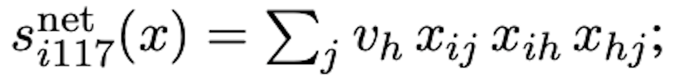
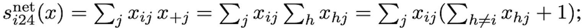

library(knitr)
library(tidyverse)
library(scholar)
library(openalexR)
library(rvest)
library(jsonlite)
library(httr)
library(rvest)
library(reshape2)
library(xml2)
library(openxlsx)
library(polite)
library(igraph)
library(sna)
library(genderizeR)
library(RSelenium)
library(netstat)
library(pingr)
library(RSiena)
library(devtools)
library(RsienaTwoStep)
# load the functions you need from the packages
fpackage.check <- function(packages) {
lapply(packages, FUN = function(x) {
if (!require(x, character.only = TRUE)) {
install.packages(x, dependencies = TRUE)
library(x, character.only = TRUE)
}
})
}
fsave <- function(x, file = NULL, location = "./data/processed/") {
ifelse(!dir.exists("data"), dir.create("data"), FALSE)
ifelse(!dir.exists("data/processed"), dir.create("data/processed"), FALSE)
if (is.null(file)) {
file <- deparse(substitute(x))
}
datename <- substr(gsub("[:-]", "", Sys.time()), 1, 8)
totalname <- paste(location, datename, file, ".rda", sep = "")
save(x, file = totalname) # need to fix if file is reloaded as input name, not as x.
}
fload <- function(filename) {
load(filename)
get(ls()[ls() != "filename"])
}
fshowdf <- function(x, ...) {
knitr::kable(x, digits = 2, "html", ...) %>%
kableExtra::kable_styling(bootstrap_options = c("striped", "hover")) %>%
kableExtra::scroll_box(width = "100%", height = "300px")
}Last compiled on October, 2025
| ### Genderize function |
| ``` r my_genderizer <- function(name) { name <- gsub(“^/+|/+$”, ““, name) |
| # Build URL base_url <- “https://nvb.meertens.knaw.nl/naam/is” name_url <- paste0(base_url, “/”, name) |
| # Try reading table table <- tryCatch( read_html(name_url) |> html_element(“table”) |> html_table(), error = function(e) NULL ) |
| if (is.null(table)) return(NA) # return NA if no table found |
| # Replace “–” with “0” table[table == “–”] <- “0” |
| # Convert to numeric val_male <- suppressWarnings(as.numeric(table[2, 3])) val_female <- suppressWarnings(as.numeric(table[6, 3])) |
| # Decide gender if (is.na(val_male) & is.na(val_female)) { gender <- NA } else if (val_male > val_female) { gender <- “male” } else if (val_female > val_male) { gender <- “female” } else { gender <- NA } |
| return(gender) } ``` |
### Load the data |
| ``` r # load in the data scholars <- fload(“./data/processed/scholars_20240924.rda”) |
| # select scholars # (sociology, RU) demographics <- do.call(rbind.data.frame, scholars$demographics) demographics <- demographics %>% mutate(Universiteit1.22 = replace(Universiteit1.22, is.na(Universiteit1.22), ““), Universiteit2.22 = replace(Universiteit2.22, is.na(Universiteit2.22),”“), Universiteit1.24 = replace(Universiteit1.24, is.na(Universiteit1.24),”“), Universiteit2.24 = replace(Universiteit2.24, is.na(Universiteit2.24),”“), discipline.22 = replace(discipline.22, is.na(discipline.22),”“), discipline.24 = replace(discipline.24, is.na(discipline.24),”“)) |
| sample <- which((demographics\(Universiteit1.22 == "RU" | demographics\)Universiteit2.22 == “RU” | demographics\(Universiteit1.24 == "RU" | demographics\)Universiteit2.24 == “RU”) & (demographics\(discipline.22 == "sociology" | demographics\)discipline.24 == “sociology”)) |
| demographics_soc <- demographics[sample, ] scholars_sel <- lapply(scholars, “[”, sample) |
| # construct the empty adjacency matrix ids <- demographics_soc$au_id wave2 <- wave1 <- matrix(0, nrow = length(ids), ncol = length(ids), dimnames = list(ids, ids)) |
| # filter works works <- scholars_sel$work |
| works_id <- unlist(lapply(works, function(l) l\(id)) works_author <- unlist(lapply(works, function(l) l\)author), recursive = FALSE) works_year <- unlist(lapply(works, function(l) l$publication_year), recursive = FALSE) |
| df_works <- tibble(works_id, works_author, works_year) |
| dups <- which(duplicated(works_id)) |
| df_works <- df_works[-dups, ] df_works_w2 <- df_works[df_works$works_year > 2019, ] |
| # undirected # undirected for (i in 1:nrow(df_works_w2)) { egos <- df_works_w2\(works_author[i][[1]]\)au_id |
| if (sum(ids %in% egos) > 0) { wave2[which(ids %in% egos), which(ids %in% egos)] <- 1 } } |
| fcolnet <- function(data = scholars, university = “RU”, discipline = “sociology”, waves = list(c(2015, 2018), c(2019, 2023)), type = c(“first”)) { |
| # step 1 demographics <- do.call(rbind.data.frame, data$demographics) demographics <- demographics %>% mutate(Universiteit1.22 = replace(Universiteit1.22, is.na(Universiteit1.22), ““), Universiteit2.22 = replace(Universiteit2.22, is.na(Universiteit2.22),”“), Universiteit1.24 = replace(Universiteit1.24, is.na(Universiteit1.24),”“), Universiteit2.24 = replace(Universiteit2.24, is.na(Universiteit2.24),”“), discipline.22 = replace(discipline.22, is.na(discipline.22),”“), discipline.24 = replace(discipline.24, is.na(discipline.24),”“)) |
| sample <- which((demographics\(Universiteit1.22 %in% university | demographics\)Universiteit2.22 %in% university | demographics\(Universiteit1.24 %in% university | demographics\)Universiteit2.24 %in% university) & (demographics\(discipline.22 %in% discipline | demographics\)discipline.24 %in% discipline)) |
| demographics_soc <- demographics[sample, ] scholars_sel <- lapply(scholars, “[”, sample) |
| # step 2 ids <- demographics_soc$au_id nwaves <- length(waves) nets <- array(0, dim = c(nwaves, length(ids), length(ids)), dimnames = list(wave = 1:nwaves, ids, ids)) dimnames(nets) |
| # step 3 df_works <- tibble(works_id = unlist(lapply(scholars_sel\(work, function(l) l\)id)), works_author = unlist(lapply(scholars_sel\(work, function(l) l\)author), recursive = FALSE), works_year = unlist(lapply(scholars_sel\(work, function(l) l\)publication_year), recursive = FALSE)) |
| df_works <- df_works[!duplicated(df_works), ] |
| # step 4 if (type == “first”) { for (j in 1:nwaves) { df_works_w <- df_works[df_works\(works_year >= waves[[j]][1] & df_works\)works_year <= waves[[j]][2],] for (i in 1:nrow(df_works_w)) { ego <- df_works_w\(works_author[i][[1]]\)au_id[1] alters <- df_works_w\(works_author[i][[1]]\)au_id[-1] if (sum(ids %in% ego) > 0 & sum(ids %in% alters) > 0) { nets[j, which(ids %in% ego), which(ids %in% alters)] <- 1 } } } } |
| if (type == “last”) { for (j in 1:nwaves) { df_works_w <- df_works[df_works\(works_year >= waves[[j]][1] & df_works\)works_year <= waves[[j]][2],] for (i in 1:nrow(df_works_w)) { ego <- rev(df_works_w\(works_author[i][[1]]\)au_id)[1] alters <- rev(df_works_w\(works_author[i][[1]]\)au_id)[-1] if (sum(ids %in% ego) > 0 & sum(ids %in% alters) > 0) { nets[j, which(ids %in% ego), which(ids %in% alters)] <- 1 } } } } |
| if (type == “all”) { for (j in 1:nwaves) { df_works_w <- df_works[df_works\(works_year >= waves[[j]][1] & df_works\)works_year <= waves[[j]][2],] for (i in 1:nrow(df_works_w)) { egos <- df_works_w\(works_author[i][[1]]\)au_id if (sum(ids %in% egos) > 0) { nets[j, which(ids %in% egos), which(ids %in% egos)] <- 1 } } } } output <- list() output\(data <- scholars_sel output\)nets <- nets return(output) } |
| df_scholars <- do.call(rbind, scholars$demographics)
``` ### Attach gender |
| ``` r df_scholars_gender <- df_scholars |> mutate(firstname = word(Naam, 1)) # extract first names |
| df_scholars_gender$gender <- NA_character_ # initialize gender column |
| for (i in seq_len(nrow(df_scholars_gender))) { name <- df_scholars_gender$firstname[i] gender <- my_genderizer(name) |
| df_scholars_gender$gender[i] <- gender
Sys.sleep(0.06) # pause between requests } ``` ### Big data |
| ``` r fcolnet_gender <- function(data = scholars, waves = list(c(2015, 2018), c(2019, 2023)), type = “first”, demographics = NULL) { |
| # ————————- # Step 1: demographics # ————————- if (is.null(demographics)) { demographics <- do.call(rbind.data.frame, data$demographics) } |
| demographics <- demographics %>% mutate( Universiteit1.22 = replace(Universiteit1.22, is.na(Universiteit1.22), ““), Universiteit2.22 = replace(Universiteit2.22, is.na(Universiteit2.22),”“), Universiteit1.24 = replace(Universiteit1.24, is.na(Universiteit1.24),”“), Universiteit2.24 = replace(Universiteit2.24, is.na(Universiteit2.24),”“), discipline.22 = replace(discipline.22, is.na(discipline.22),”“), discipline.24 = replace(discipline.24, is.na(discipline.24),”“) ) |
| # ————————- # select all scholars # ————————- sample <- seq_len(nrow(demographics)) |
| demographics_all <- demographics[sample, ] scholars_sel <- lapply(data, “[”, sample) |
| # ————————- # Step 2: initialize network array # ————————- ids <- demographics_all$au_id nwaves <- length(waves) nets <- array( 0, dim = c(nwaves, length(ids), length(ids)), dimnames = list(wave = 1:nwaves, ids, ids) ) |
| # ————————- # Step 3: works dataframe # ————————- df_works <- tibble( works_id = unlist(lapply(scholars_sel\(work, function(l) if(!is.null(l)) l\)id else NA)), works_author = unlist(lapply(scholars_sel\(work, function(l) if(!is.null(l)) l\)author else NA), recursive = FALSE), works_year = unlist(lapply(scholars_sel\(work, function(l) if(!is.null(l)) l\)publication_year else NA), recursive = FALSE) ) %>% filter(!is.na(works_id)) |
| df_works <- df_works[!duplicated(df_works), ] |
| # ————————- # Step 4: build networks # ————————- if (type == “first”) { for (j in 1:nwaves) { df_works_w <- df_works[df_works\(works_year >= waves[[j]][1] & df_works\)works_year <= waves[[j]][2], ] for (i in 1:nrow(df_works_w)) { ego <- df_works_w\(works_author[i][[1]]\)au_id[1] alters <- df_works_w\(works_author[i][[1]]\)au_id[-1] if (sum(ids %in% ego) > 0 & sum(ids %in% alters) > 0) { nets[j, which(ids %in% ego), which(ids %in% alters)] <- 1 } } } } |
| if (type == “last”) { for (j in 1:nwaves) { df_works_w <- df_works[df_works\(works_year >= waves[[j]][1] & df_works\)works_year <= waves[[j]][2], ] for (i in 1:nrow(df_works_w)) { ego <- rev(df_works_w\(works_author[i][[1]]\)au_id)[1] alters <- rev(df_works_w\(works_author[i][[1]]\)au_id)[-1] if (sum(ids %in% ego) > 0 & sum(ids %in% alters) > 0) { nets[j, which(ids %in% ego), which(ids %in% alters)] <- 1 } } } } |
| if (type == “all”) { for (j in 1:nwaves) { df_works_w <- df_works[df_works\(works_year >= waves[[j]][1] & df_works\)works_year <= waves[[j]][2], ] for (i in 1:nrow(df_works_w)) { egos <- df_works_w\(works_author[i][[1]]\)au_id if (sum(ids %in% egos) > 0) { nets[j, which(ids %in% egos), which(ids %in% egos)] <- 1 } } } } |
| # ————————- # Step 5: output # ————————- output <- list() output\(data <- scholars_sel output\)nets <- nets output$demographics <- demographics_all # includes gender if passed in |
| return(output) } ``` ### output |
| ``` r result_gender2 <- fcolnet_gender( data = scholars, demographics = df_scholars_gender, waves = list(c(2015, 2018), c(2019,2023)), type= “first” ) |
| # View gender info head(result_gender2$demographics[, c(“au_id”, “firstname”, “gender”)]) ``` |
## # A tibble: 6 × 3 ## au_id firstname gender ## <chr> <chr> <chr> ## 1 https://openalex.org/A5076379849 Ece female ## 2 https://openalex.org/A5043161143 Marcel male ## 3 https://openalex.org/A5065278343 Weverthon <NA> ## 4 https://openalex.org/A5087995858 Vardan male ## 5 https://openalex.org/A5038890249 Anne female ## 6 https://openalex.org/A5060904065 Vincent male |
wave1 <- result_gender2$nets[1,,]
wave2 <- result_gender2$nets[2,,]
# filter out the waves of the object: we need to check our input
dim(wave1)## [1] 675 675dim(wave2)## [1] 675 675# you need to have 0 missing values:
sum(is.na(wave1))## [1] 0sum(is.na(wave2))## [1] 0#check the diagonal: all places should be 0
sum(diag(wave1)==0)## [1] 671sum(diag(wave2)==0)## [1] 672# a few people did work with themselves:
diag(wave1) <- 0
diag(wave2) <- 0
# everything should be 1 or 0:
sum(wave1>1)## [1] 0sum(wave2>1)## [1] 0# check if it's not empty: there are people with 1's
sum(wave1>0)## [1] 336sum(wave2>0)## [1] 573net_gender <- array(data = c(wave1, wave2), dim = c(dim(wave1), 2))
# net_gender
# dependent
net2 <- sienaDependent(net_gender)
# independent variables
gender <- result_gender2$demographics$gender
gender <- ifelse(gender=="female",1,0)
gender <- coCovar(gender)
#gender
# Create siena data object
mydata3 <- sienaDataCreate(net2, gender)
mydata3## Dependent variables: net2
## Number of observations: 2
##
## Nodeset Actors
## Number of nodes 675
##
## Dependent variable net2
## Type oneMode
## Observations 2
## Nodeset Actors
## Densities 0.00074 0.0013
##
## Constant covariates: gendermyeff <-getEffects(mydata3)
ifelse(!dir.exists("results"), dir.create("results"), FALSE)## [1] FALSEprint01Report(mydata3, modelname = "./results/soc_init2")myeff <- includeEffects(myeff, egoX, interaction1 = "gender", type = "eval", include = T)
# can allso add the altX to the equation
myeff <- setEffect(myeff, altX, interaction1 = "gender", include = T)
# can also add egoXaltX
myeff <- setEffect(myeff, egoXaltX, interaction1 = "gender", include = T)
myAlgorithm <- sienaAlgorithmCreate(projname = "soc_init")
ansM1 <- siena07(myAlgorithm, data = mydata3, effects = myeff, returnDeps = TRUE)
# if necessary estimate again! ansM1 <- siena07(myAlgorithm, data = mydata, effects = myeff,
# prevAns = ansM1, returnDeps=TRUE)
ansM1
This means that:
Outdegree: Significant and negative (b = -4.1697, SE = 0.0827): there is an overall tendency not to form ties (most people collaborate with few others)
Reciprocity: Significant and positive (b = 3.7150, SE = 0.1708): mutual collaborations are more likely: if A co-authors with B, B is more likely to co-author with A.
Gender ego: Significant and positive (b = 0.4094, SE = 0.1549): Being a woman increases the likelihood of initiating co-authorships.
Gender alter: Significant and negative (b = -0.2908, SE = 0.0826): Being a woman decreases the likelihood of being chosen as a co-author.
Gender ego × gender alter: Significant and positive (b = 0.5069, SE = 0.1626) : Suggests same-gender collaborations are more likely than cross-gender ones.
The defining characteristic of Stochastic Actor-Oriented Models is their ‘actor-oriented’ nature which means that they model change from the perspective of the actors (nodes).
For network evolution, three conceptual functions may be used: evaluation, creation, and endowment. These differ in whether one models all tie presence (evaluation), just tie formation (creation), or tie maintenance (endowment).
Effects: These are the modeled influences (explanatory factors) on change.
Structural effects (endogenous) e.g. reciprocity, transitivity
Covariate effects (exogenous) e.g. similarity, attribute of sender/receiver
Interaction effects (combinations) e.g. interaction of structure and covariate
Estimation procedure:
RSiena uses the function siena07 to estimate parameters.The goal is that the model-implied (expected) network/behavioral statistics match observed statistics.
The estimation proceeds in phases:
Estimate sensitivity of statistics to parameters
Iterative updates: simulate networks, compute deviations, adjust parameters
Check convergence: whether simulated statistics are close enough to observed targets
If convergence criteria are not met, estimation may be repeated or refined.
### Chapter 5
In many applications, it’s best to start with a simple baseline model (e.g. including only core structural effects like out-degree and reciprocity).
From there, add or remove effects (in small sets, e.g. 1–3 at a time), assessing convergence, interpretability, and fit at each stage.
It is wise to always retain certain “anchor” effects (e.g. out-degree or rate parameters) even if they are not statistically significant, because they stabilize the model structure.
There are many Structural effects you can include. I tried around with triangulation, but I did not think it really fit my gender research. It could be interesting: if you have A -> B -> C, would the gender of B impact whether A -> C would collaborate.
myeff <- includeEffects(myeff, egoX, interaction1 = "gender", type = "eval", include = T) ## effectNumber effectName shortName include fix test initialValue parm
## 1 253 gender ego egoX TRUE FALSE FALSE 0 0myeff <- setEffect(myeff, altX, interaction1 = "gender", include = T) ## effectNumber effectName shortName include fix test initialValue parm
## 1 238 gender alter altX TRUE FALSE FALSE 0 0myeff <- setEffect(myeff, egoXaltX, interaction1 = "gender", include = T)## effectNumber effectName shortName include fix test
## 1 388 gender ego x gender alter egoXaltX TRUE FALSE FALSE
## initialValue parm
## 1 0 0myeff <- includeEffects(myeff, transTrip, include = T)## effectNumber effectName shortName include fix test initialValue
## 1 21 transitive triplets transTrip TRUE FALSE FALSE 0
## parm
## 1 0myeff <- includeEffects(myeff, transTripX, interaction1 = "gender", type = "eval", include = T)## effectNumber effectName shortName include fix test
## 1 358 trans. triplets intermed. gender transTripX TRUE FALSE FALSE
## initialValue parm
## 1 0 0myAlgorithm <- sienaAlgorithmCreate(projname = "soc_init")## If you use this algorithm object, siena07 will create/use an output file soc_init.txt .ansM2 <- siena07(myAlgorithm, data = mydata3, effects = myeff, returnDeps = TRUE)## tcltk DLL is linked to '/opt/X11/lib/libX11.6.dylib'## Package tcltk not available, forcing use of batch mode##
## Start phase 0
## theta: -1.74 0.00 0.00 0.00 0.00 0.00 0.00
##
## Start phase 1
## Phase 1 Iteration 1 Progress: 0%
## Phase 1 Iteration 2 Progress: 0%
## Phase 1 Iteration 3 Progress: 0%
## Phase 1 Iteration 4 Progress: 0%
## Phase 1 Iteration 5 Progress: 0%
## Phase 1 Iteration 10 Progress: 0%
## Phase 1 Iteration 15 Progress: 0%
## Phase 1 Iteration 20 Progress: 1%
## Phase 1 Iteration 25 Progress: 1%
## Phase 1 Iteration 30 Progress: 1%
## Phase 1 Iteration 35 Progress: 1%
## Phase 1 Iteration 40 Progress: 1%
## Phase 1 Iteration 45 Progress: 1%
## Phase 1 Iteration 50 Progress: 2%
## theta: -2.0824 0.3164 0.0458 0.0239 0.1113 -1.0000 -0.0408
##
## Start phase 2.1
## Phase 2 Subphase 1 Iteration 1 Progress: 13%
## Phase 2 Subphase 1 Iteration 2 Progress: 13%
## theta -2.4973 0.6099 0.3528 0.0652 0.2065 -1.6033 -0.0691
## ac 1.057 0.945 1.083 -3.423 1.595 1.535 0.902
## Phase 2 Subphase 1 Iteration 3 Progress: 13%
## Phase 2 Subphase 1 Iteration 4 Progress: 13%
## theta -3.769 1.583 1.397 0.190 0.453 -3.147 -0.126
## ac 1.157 1.123 0.296 0.772 1.594 0.139 0.864
## Phase 2 Subphase 1 Iteration 5 Progress: 13%
## Phase 2 Subphase 1 Iteration 6 Progress: 13%
## theta -4.352509 2.453340 2.588733 0.294646 0.436046 0.000501 -0.016128
## ac 1.1397 1.3463 0.1451 0.4368 1.3970 0.0322 0.6576
## Phase 2 Subphase 1 Iteration 7 Progress: 13%
## Phase 2 Subphase 1 Iteration 8 Progress: 13%
## theta -4.501 3.109 2.007 0.209 0.482 0.737 0.156
## ac 1.102 0.844 -0.479 0.416 0.998 -0.562 0.684
## Phase 2 Subphase 1 Iteration 9 Progress: 13%
## Phase 2 Subphase 1 Iteration 10 Progress: 13%
## theta -4.36452 3.26204 2.13160 0.00193 0.60418 1.21293 0.36306
## ac 1.087 0.872 -0.368 0.485 0.201 -0.414 0.777
## Phase 2 Subphase 1 Iteration 200 Progress: 20%
## theta -4.519 3.584 1.071 -0.379 0.620 -1.490 0.527
## ac 0.09857 -0.37943 -0.44428 0.13246 -0.07170 -0.41358 0.00395
## theta -4.298 3.148 1.849 -0.298 0.397 0.179 0.509
## ac 0.03624 -0.39229 -0.43930 0.11002 -0.08830 -0.40997 -0.00211
## theta: -4.298 3.148 1.849 -0.298 0.397 0.179 0.509
##
## Start phase 2.2
## Phase 2 Subphase 2 Iteration 1 Progress: 21%
## Phase 2 Subphase 2 Iteration 2 Progress: 21%
## Phase 2 Subphase 2 Iteration 3 Progress: 21%
## Phase 2 Subphase 2 Iteration 4 Progress: 21%
## Phase 2 Subphase 2 Iteration 5 Progress: 21%
## Phase 2 Subphase 2 Iteration 6 Progress: 21%
## Phase 2 Subphase 2 Iteration 7 Progress: 21%
## Phase 2 Subphase 2 Iteration 8 Progress: 21%
## Phase 2 Subphase 2 Iteration 9 Progress: 21%
## Phase 2 Subphase 2 Iteration 10 Progress: 21%
## theta -4.314 3.177 1.824 -0.326 0.413 0.125 0.533
## ac -0.457 -0.404 -0.367 -0.177 -0.120 -0.527 -0.156
## theta: -4.314 3.177 1.824 -0.326 0.413 0.125 0.533
##
## Start phase 2.3
## Phase 2 Subphase 3 Iteration 1 Progress: 30%
## Phase 2 Subphase 3 Iteration 2 Progress: 30%
## Phase 2 Subphase 3 Iteration 3 Progress: 30%
## Phase 2 Subphase 3 Iteration 4 Progress: 30%
## Phase 2 Subphase 3 Iteration 5 Progress: 30%
## Phase 2 Subphase 3 Iteration 6 Progress: 30%
## Phase 2 Subphase 3 Iteration 7 Progress: 30%
## Phase 2 Subphase 3 Iteration 8 Progress: 30%
## Phase 2 Subphase 3 Iteration 9 Progress: 30%
## Phase 2 Subphase 3 Iteration 10 Progress: 30%
## Phase 2 Subphase 3 Iteration 200 Progress: 37%
## theta -4.2534 3.0192 1.8154 -0.3009 0.3393 0.0745 0.4731
## ac -0.1817 -0.1528 -0.0999 0.0690 0.0779 -0.2106 0.0595
## Phase 2 Subphase 3 Iteration 400 Progress: 43%
## theta -4.227 2.925 1.848 -0.302 0.310 0.632 0.529
## ac -0.0934 -0.1454 -0.1453 0.0345 0.0274 -0.1918 -0.0192
## theta -4.295 3.100 1.921 -0.290 0.345 0.218 0.488
## ac -0.0953 -0.1414 -0.1443 0.0343 0.0292 -0.1936 -0.0231
## theta: -4.295 3.100 1.921 -0.290 0.345 0.218 0.488
##
## Start phase 2.4
## Phase 2 Subphase 4 Iteration 1 Progress: 43%
## Phase 2 Subphase 4 Iteration 2 Progress: 43%
## Phase 2 Subphase 4 Iteration 3 Progress: 43%
## Phase 2 Subphase 4 Iteration 4 Progress: 43%
## Phase 2 Subphase 4 Iteration 5 Progress: 44%
## Phase 2 Subphase 4 Iteration 6 Progress: 44%
## Phase 2 Subphase 4 Iteration 7 Progress: 44%
## Phase 2 Subphase 4 Iteration 8 Progress: 44%
## Phase 2 Subphase 4 Iteration 9 Progress: 44%
## Phase 2 Subphase 4 Iteration 10 Progress: 44%
## Phase 2 Subphase 4 Iteration 200 Progress: 50%
## theta -4.332 3.135 1.947 -0.323 0.388 0.164 0.516
## ac 0.0283 -0.1882 -0.1899 -0.0625 -0.1325 -0.1601 -0.0466
## Phase 2 Subphase 4 Iteration 400 Progress: 57%
## theta -4.277 3.041 1.952 -0.310 0.415 0.177 0.531
## ac 0.0392 -0.1009 -0.1415 -0.1248 -0.0744 -0.1521 -0.0749
## Phase 2 Subphase 4 Iteration 600 Progress: 63%
## theta -4.278 3.046 2.012 -0.295 0.382 0.404 0.526
## ac 0.0582 -0.0545 -0.0884 -0.1453 -0.0899 -0.1889 -0.0899
## theta -4.300 3.097 1.935 -0.308 0.399 0.188 0.511
## ac 0.0728 -0.0464 -0.0850 -0.1289 -0.0569 -0.1806 -0.1301
## theta: -4.300 3.097 1.935 -0.308 0.399 0.188 0.511
##
## Start phase 3
## Phase 3 Iteration 100 Progress 71%
## Phase 3 Iteration 200 Progress 74%
## Phase 3 Iteration 300 Progress 77%
## Phase 3 Iteration 400 Progress 81%
## Phase 3 Iteration 500 Progress 84%
## Phase 3 Iteration 600 Progress 87%
## Phase 3 Iteration 700 Progress 90%
## Phase 3 Iteration 800 Progress 94%
## Phase 3 Iteration 900 Progress 97%
## Phase 3 Iteration 1000 Progress 100%# if necessary estimate again! ansM1 <- siena07(myAlgorithm, data = mydata, effects = myeff,
# prevAns = ansM1, returnDeps=TRUE)
ansM2## Estimates, standard errors and convergence t-ratios
##
## Estimate Standard Convergence
## Error t-ratio
##
## Rate parameters:
## 0 Rate parameter 4.1644 ( 0.4481 )
##
## Other parameters:
## 1. eval outdegree (density) -4.3002 ( 0.1005 ) 0.1340
## 2. eval reciprocity 3.0967 ( 0.2002 ) 0.1400
## 3. eval transitive triplets 1.9346 ( 0.2199 ) 0.2456
## 4. eval gender alter -0.3084 ( 0.1048 ) -0.1005
## 5. eval gender ego 0.3986 ( 0.1566 ) 0.0088
## 6. eval trans. triplets intermed. gender 0.1875 ( 0.5349 ) 0.0476
## 7. eval gender ego x gender alter 0.5114 ( 0.1696 ) 0.0175
##
## Overall maximum convergence ratio: 0.2947
##
##
## Total of 2550 iteration steps.The network shows a significant tendency toward transitive closure (b = 1.9166, SE = 0.1786), meaning that “friends of friends” are more likely to become connected. The effect of transitive triplets moderated by the intermediate person’s gender is not significant (b = 0.1580, SE = 0.5294), suggesting that the gender of the intermediate has no influence on whether triads close. If you have A -> B -> C, the gender of B does not impact whether A -> C would collaborate.
Formula: 
For all alters j, if ego
i is tied to an intermediary h who is a woman (male = 0, female = 1) and
intermediary h has a connection to alter j, and alter j has a connection
to ego i, then that configuration adds 1 to i’s transTripX
statistic.
# first put the triadic effects on: do not include
myeff <- includeEffects(myeff, transTrip, include = F)## effectNumber effectName shortName include fix test initialValue
## 1 21 transitive triplets transTrip FALSE FALSE FALSE 0
## parm
## 1 0myeff <- includeEffects(myeff, transTripX, interaction1 = "gender", type = "eval", include = F)## effectNumber effectName shortName include fix test
## 1 358 trans. triplets intermed. gender transTripX FALSE FALSE FALSE
## initialValue parm
## 1 0 0# Get ego, alt and egoalt effects
myeff <- includeEffects(myeff, egoX, interaction1 = "gender", type = "eval", include = T) ## effectNumber effectName shortName include fix test initialValue parm
## 1 253 gender ego egoX TRUE FALSE FALSE 0 0myeff <- setEffect(myeff, altX, interaction1 = "gender", include = T) ## effectNumber effectName shortName include fix test initialValue parm
## 1 238 gender alter altX TRUE FALSE FALSE 0 0myeff <- setEffect(myeff, egoXaltX, interaction1 = "gender", include = T)## effectNumber effectName shortName include fix test
## 1 388 gender ego x gender alter egoXaltX TRUE FALSE FALSE
## initialValue parm
## 1 0 0myeff <- includeEffects(myeff, inPop, include = T)## effectNumber effectName shortName include fix test initialValue
## 1 78 indegree - popularity inPop TRUE FALSE FALSE 0
## parm
## 1 0myeff <- includeInteraction(myeff, egoX, inPop, interaction1 = c("gender", ""), type = "eval", include = T)## effectNumber effectName shortName include fix test
## 1 78 indegree - popularity inPop TRUE FALSE FALSE
## 2 253 gender ego egoX TRUE FALSE FALSE
## 3 422 gender ego x indegree - popularity unspInt TRUE FALSE FALSE
## initialValue parm effect1 effect2
## 1 0 0 0 0
## 2 0 0 0 0
## 3 0 0 253 78myAlgorithm <- sienaAlgorithmCreate(projname = "soc_init")## If you use this algorithm object, siena07 will create/use an output file soc_init.txt .ansM3 <- siena07(myAlgorithm, data = mydata3, effects = myeff, returnDeps = TRUE)## tcltk DLL is linked to '/opt/X11/lib/libX11.6.dylib'## Package tcltk not available, forcing use of batch mode##
## Start phase 0
## theta: -1.74 0.00 0.00 0.00 0.00 0.00 0.00
##
## Start phase 1
## Phase 1 Iteration 1 Progress: 0%
## Phase 1 Iteration 2 Progress: 0%
## Phase 1 Iteration 3 Progress: 0%
## Phase 1 Iteration 4 Progress: 0%
## Phase 1 Iteration 5 Progress: 0%
## Phase 1 Iteration 10 Progress: 0%
## Phase 1 Iteration 15 Progress: 0%
## Phase 1 Iteration 20 Progress: 1%
## Phase 1 Iteration 25 Progress: 1%
## Phase 1 Iteration 30 Progress: 1%
## Phase 1 Iteration 35 Progress: 1%
## Phase 1 Iteration 40 Progress: 1%
## Phase 1 Iteration 45 Progress: 1%
## Phase 1 Iteration 50 Progress: 2%
## theta: -2.248664 1.000000 0.011332 -0.000861 -0.030136 0.061882 0.005652
##
## Start phase 2.1
## Phase 2 Subphase 1 Iteration 1 Progress: 13%
## Phase 2 Subphase 1 Iteration 2 Progress: 13%
## theta -2.60497 1.59577 0.01650 -0.00932 -0.04940 0.10132 0.00886
## ac 1.12 1.11 1.96 0.85 1.20 1.15 1.09
## Phase 2 Subphase 1 Iteration 3 Progress: 13%
## Phase 2 Subphase 1 Iteration 4 Progress: 13%
## theta -3.7328 3.4361 0.0493 -0.0263 -0.0931 0.2321 0.0236
## ac 1.222 1.075 0.463 0.316 1.314 -0.208 1.159
## Phase 2 Subphase 1 Iteration 5 Progress: 13%
## Phase 2 Subphase 1 Iteration 6 Progress: 13%
## theta -4.7183 4.1059 0.1738 -0.0346 -0.1306 0.3626 0.0656
## ac 1.223 1.543 0.773 0.252 1.331 -0.474 1.252
## Phase 2 Subphase 1 Iteration 7 Progress: 13%
## Phase 2 Subphase 1 Iteration 8 Progress: 13%
## theta -5.1548 4.2260 0.2232 -0.0447 -0.1555 0.4383 0.0838
## ac 1.26 1.42 3.63 2.48 1.39 0.37 1.43
## Phase 2 Subphase 1 Iteration 9 Progress: 13%
## Phase 2 Subphase 1 Iteration 10 Progress: 13%
## theta -5.2229 4.0633 0.2282 -0.0927 -0.0943 0.4446 0.0945
## ac 1.234 0.829 3.616 2.519 1.370 -0.203 0.842
## Phase 2 Subphase 1 Iteration 200 Progress: 20%
## theta -4.6594 3.9227 0.1564 -0.2080 0.3737 0.5291 0.0398
## ac 0.01981 0.12654 -0.00196 0.00360 0.09585 -0.11524 -0.04773
## theta -4.6090 3.7206 0.1908 -0.1595 0.3556 0.5258 0.0389
## ac 0.00563 0.08987 -0.00375 0.00281 0.07865 -0.10212 -0.04288
## theta: -4.6090 3.7206 0.1908 -0.1595 0.3556 0.5258 0.0389
##
## Start phase 2.2
## Phase 2 Subphase 2 Iteration 1 Progress: 21%
## Phase 2 Subphase 2 Iteration 2 Progress: 21%
## Phase 2 Subphase 2 Iteration 3 Progress: 21%
## Phase 2 Subphase 2 Iteration 4 Progress: 21%
## Phase 2 Subphase 2 Iteration 5 Progress: 21%
## Phase 2 Subphase 2 Iteration 6 Progress: 21%
## Phase 2 Subphase 2 Iteration 7 Progress: 21%
## Phase 2 Subphase 2 Iteration 8 Progress: 21%
## Phase 2 Subphase 2 Iteration 9 Progress: 21%
## Phase 2 Subphase 2 Iteration 10 Progress: 21%
## Phase 2 Subphase 2 Iteration 200 Progress: 27%
## theta -4.5855 3.7197 0.1739 -0.1285 0.2776 0.4772 0.0286
## ac 0.1716 0.1330 0.2306 0.2702 -0.1289 0.0984 0.3698
## theta -4.6157 3.7033 0.1921 -0.1392 0.2735 0.5449 0.0427
## ac 0.1450 0.1449 0.2363 0.2294 -0.0317 0.0488 0.2060
## theta: -4.6157 3.7033 0.1921 -0.1392 0.2735 0.5449 0.0427
##
## Start phase 2.3
## Phase 2 Subphase 3 Iteration 1 Progress: 30%
## Phase 2 Subphase 3 Iteration 2 Progress: 30%
## Phase 2 Subphase 3 Iteration 3 Progress: 30%
## Phase 2 Subphase 3 Iteration 4 Progress: 30%
## Phase 2 Subphase 3 Iteration 5 Progress: 30%
## Phase 2 Subphase 3 Iteration 6 Progress: 30%
## Phase 2 Subphase 3 Iteration 7 Progress: 30%
## Phase 2 Subphase 3 Iteration 8 Progress: 30%
## Phase 2 Subphase 3 Iteration 9 Progress: 30%
## Phase 2 Subphase 3 Iteration 10 Progress: 30%
## Phase 2 Subphase 3 Iteration 200 Progress: 37%
## theta -4.5983 3.7465 0.1759 -0.1642 0.3036 0.5235 0.0462
## ac 0.2134 0.2225 0.0978 0.1235 -0.0577 -0.0280 0.1077
## Phase 2 Subphase 3 Iteration 400 Progress: 43%
## theta -4.5583 3.6604 0.1688 -0.1453 0.2978 0.5017 0.0235
## ac 0.1874 0.2144 0.1121 0.1351 -0.0277 0.1002 0.0785
## theta -4.6351 3.7424 0.1910 -0.1368 0.3008 0.5435 0.0341
## ac 0.2018 0.2141 0.1125 0.1358 -0.0206 0.0999 0.0654
## theta: -4.6351 3.7424 0.1910 -0.1368 0.3008 0.5435 0.0341
##
## Start phase 2.4
## Phase 2 Subphase 4 Iteration 1 Progress: 43%
## Phase 2 Subphase 4 Iteration 2 Progress: 43%
## Phase 2 Subphase 4 Iteration 3 Progress: 43%
## Phase 2 Subphase 4 Iteration 4 Progress: 43%
## Phase 2 Subphase 4 Iteration 5 Progress: 44%
## Phase 2 Subphase 4 Iteration 6 Progress: 44%
## Phase 2 Subphase 4 Iteration 7 Progress: 44%
## Phase 2 Subphase 4 Iteration 8 Progress: 44%
## Phase 2 Subphase 4 Iteration 9 Progress: 44%
## Phase 2 Subphase 4 Iteration 10 Progress: 44%
## Phase 2 Subphase 4 Iteration 200 Progress: 50%
## theta -4.6325 3.7766 0.1887 -0.1267 0.3521 0.5294 0.0281
## ac 0.2130 0.0751 0.2096 0.2730 0.1009 0.0482 0.1016
## Phase 2 Subphase 4 Iteration 400 Progress: 57%
## theta -4.6767 3.7853 0.1955 -0.1397 0.3078 0.5237 0.0327
## ac 0.1454 0.0886 0.1338 0.1669 0.0131 0.0020 0.0371
## Phase 2 Subphase 4 Iteration 600 Progress: 63%
## theta -4.6469 3.8179 0.1818 -0.1425 0.3348 0.5795 0.0338
## ac 0.12256 0.02371 0.11733 0.16646 -0.00437 0.02228 0.04069
## theta -4.6400 3.7417 0.1910 -0.1356 0.3138 0.5453 0.0344
## ac 0.1304 0.0336 0.1095 0.1583 0.0430 0.0438 0.0480
## theta: -4.6400 3.7417 0.1910 -0.1356 0.3138 0.5453 0.0344
##
## Start phase 3
## Phase 3 Iteration 100 Progress 71%
## Phase 3 Iteration 200 Progress 74%
## Phase 3 Iteration 300 Progress 77%
## Phase 3 Iteration 400 Progress 81%
## Phase 3 Iteration 500 Progress 84%
## Phase 3 Iteration 600 Progress 87%
## Phase 3 Iteration 700 Progress 90%
## Phase 3 Iteration 800 Progress 94%
## Phase 3 Iteration 900 Progress 97%
## Phase 3 Iteration 1000 Progress 100%# if necessary estimate again! ansM1 <- siena07(myAlgorithm, data = mydata, effects = myeff,
# prevAns = ansM1, returnDeps=TRUE)
ansM3## Estimates, standard errors and convergence t-ratios
##
## Estimate Standard Convergence
## Error t-ratio
##
## Rate parameters:
## 0 Rate parameter 3.2835 ( 0.6595 )
##
## Other parameters:
## 1. eval outdegree (density) -4.6400 ( 0.1646 ) 0.5114
## 2. eval reciprocity 3.7417 ( 0.1882 ) -0.1217
## 3. eval indegree - popularity 0.1910 ( 0.0238 ) 0.4325
## 4. eval gender alter -0.1356 ( 0.1207 ) -0.4267
## 5. eval gender ego 0.3138 ( 0.2369 ) -0.0120
## 6. eval gender ego x gender alter 0.5453 ( 0.1734 ) -0.1737
## 7. eval gender ego x indegree - popularity 0.0344 ( 0.0483 ) 0.3754
##
## Overall maximum convergence ratio: 0.5373
##
##
## Total of 2750 iteration steps.I am not sure whether I am interpreting this correctly but:
The indegree-popularity effect was significant and positive (b = 0.19, SE = 0.03) uggesting that actors who received more nominations were more likely to attract additional ones.
Women in the network initially received fewer ties than men, but after including the indegree–popularity effect, the main gender effects were no longer significant (gender ego: b = 0.33, SE = 0.22; gender alter: b = –0.14, SE = 0.13). This suggests that the observed gender differences were largely explained by popularity rather than gender itself. The interaction between gender ego and indegree–popularity (b = 0.03, SE = 0.06) was also non-significant, indicating that popularity influences tie formation similarly for men and women. Overall, gender differences in tie initiation appear to stem from structural network dynamics—such as a preference for connecting to already popular alters, among whom men are likely overrepresented—rather than from direct gender-based effects.
The formula:  For all alter’s (j):
if an ego (i) has a tie to an alter (j) sum for the alter (j) the number
of its alters (h) which are not ego (i), and then you do plus one
because you also want to count the one connection to ego (i).